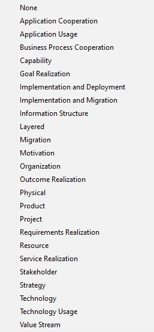
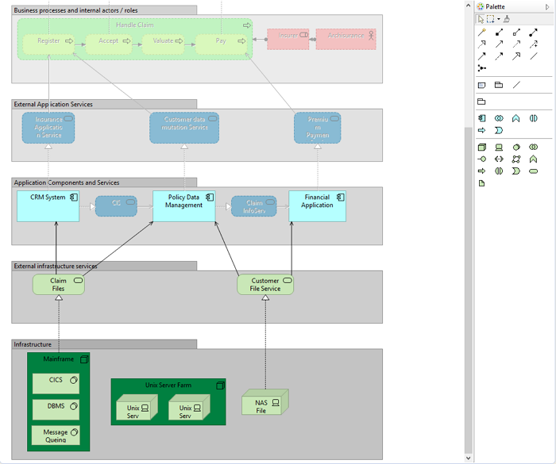
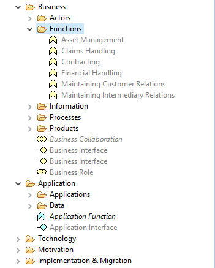
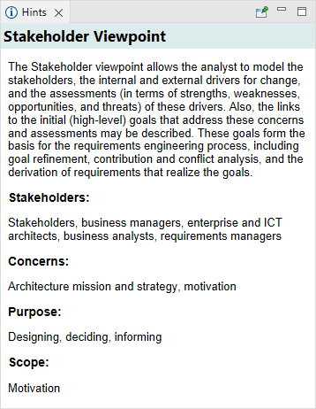

ArchiMate 规范指出，“视点是一种关注架构特定方面和层的方法。这些方面和层由与之进行沟通的利益相关者的关注点决定。从特定的角度看应该和不应该看到什么。因此，完全取决于对利益相关者的关注点。”
在实践中，视点是针对利益相关者的元素和关系的子集。 Archi 允许您指定以下视点：
支持的视点
在 Archi 中创建新视图时，默认视点设置为“无”，这意味着所有概念都可以添加到视图中。在视图上设置视点意味着可以在视图上放置一组元素。 其他一些 ArchiMate 创作工具要求您在创建视图时提前指定视点。 不幸的是，这意味着如果您希望稍后更改视图中的视点，则无法改变主意。 然而，Archi 实现了动态视点，因此您可以随时更改视点，并且那些不允许用于该视点的元素被“幻影”掉。动态视点允许您改变主意。您不必预先决定视点将是什么。您可以为同一视图尝试不同的视点。如果您决定保留视点，您可以简单地从视图中删除任何禁用的元素。
要设置视图的视点，请在视图编辑器中打开视图并从主“视图->视点”菜单中选择所需的视点，或者右键单击视图的绘图区域并从上下文菜单中选择它。 您还可以从视图的 属性 窗口更改视点。
在以下示例中，我们从具有默认“无”视点的视图开始：

具有“无”视点的视图
请注意，来自所有 ArchiMate 层（业务、应用和技术）的所有元素都会显示出来。 此外，调色板具有所有可用元素。
如果我们现在将视点更改为“技术”，那么任何不属于该视点的元素都会在视图中“幻影”出来。另请注意，只有当前视点允许的元素在调色板中可用，而其他元素不可用：
与“技术使用”视点相同的视图
如果我们查看模型树中的元素，我们可以看到视点的非允许元素也显示为灰色：
不允许用于视点的元素显示为灰色
如果我们选择这样做，我们可以将任何元素从模型树拖放到视图中，但视图中的结果元素将显示为灰色。这意味着我们可以以任何我们想要的方式使用视点，但我们始终会被提醒应该和不应该将什么添加到视点。
如果您不确定视点的约束条件，请选择它，然后打开 提示窗口。 视点有完整的解释：
视点提示